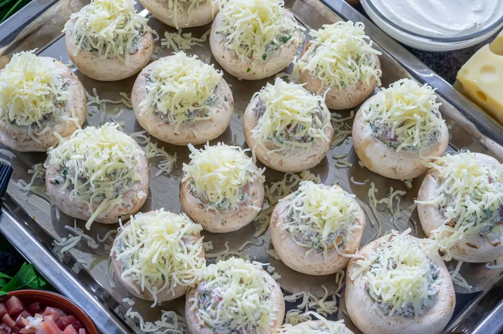

Champiñones Rellenos de Queso
Los champiñones rellenos de jamón y queso Philadelphia al horno son una opción deliciosa y versátil para disfrutar en cualquier ocasión. Esta receta combina la textura suave de los champiñones, el sabor salado del jamón y la cremosidad del queso Philadelphia, creando una explosión de sabores en cada bocado. ¡No dudes en probarla y sorprender a tus seres queridos con este irresistible plato!
Tiempos de preparación
- Tiempo total: 20 a 25 minutos
- Tiempo de cocción: 10 a 15 minutos
Pasos:
- Lava los champiñones bajo agua fría y retira los tallos. Reserva los tallos para usar más tarde en el relleno. Coloca los champiñones en una bandeja para hornear y precalienta el horno a 180°C.
- Pica finamente los tallos de los champiñones y el diente de ajo. En una sartén, calienta un poco de aceite de oliva y saltea los tallos y el ajo durante unos minutos, hasta que estén dorados. Luego, añade el jamón serrano picado y cocina por unos minutos más.
- Una vez que el relleno esté listo, colócalo dentro de cada champiñón, asegurándote de presionar ligeramente para que se adhiera bien. Coloca los champiñones rellenos en la bandeja para hornear y espolvorea un poco de sal y pimienta por encima.
- Introduce la bandeja en el horno precalentado y hornea durante aproximadamente 20 minutos, o hasta que los champiñones estén tiernos y el queso se haya derretido y esté ligeramente dorado por encima.
- Servir.